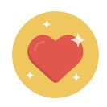
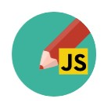
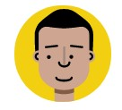
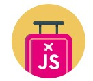
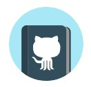

I lead some of Google Chrome 's Speed and Developer Experience efforts. Our projects include Aurora, Lighthouse, PageSpeed Insights, and Chrome User Experience Report. We recently shipped User Flows for DevTools and Lighthouse!
Projects I've contributed to include Lighthouse, Workbox, Quicklink, Guess.js, Yeoman, HNPWA, TodoMVC, Critical and Material Design Life You can find more on GitHub.
My books include Image Optimization (2021), Learning Patterns (2021) with Lydia Hallie, Learning JavaScript Design Patterns and Backbone.js Apps. I am working on a few other book projects in 2022: Efficient Engineering and Success at scale.
I previously appeared on State Of The Web talking about the state of JavaScript. The last show I did was season 4 of Totally Tooling Tips with Matt Gaunt. It has unicorns!.
Recordings of my talks are on my Youtube channel. My last talks were Optimize the Core Web Vitals and Adaptive Loading. You can find my talks on Lanyrd and slides on SpeakerDeck.
My latest blog posts can be found on my web.dev.profile. My last post on here was: Writing from 2021